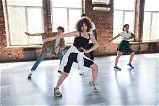
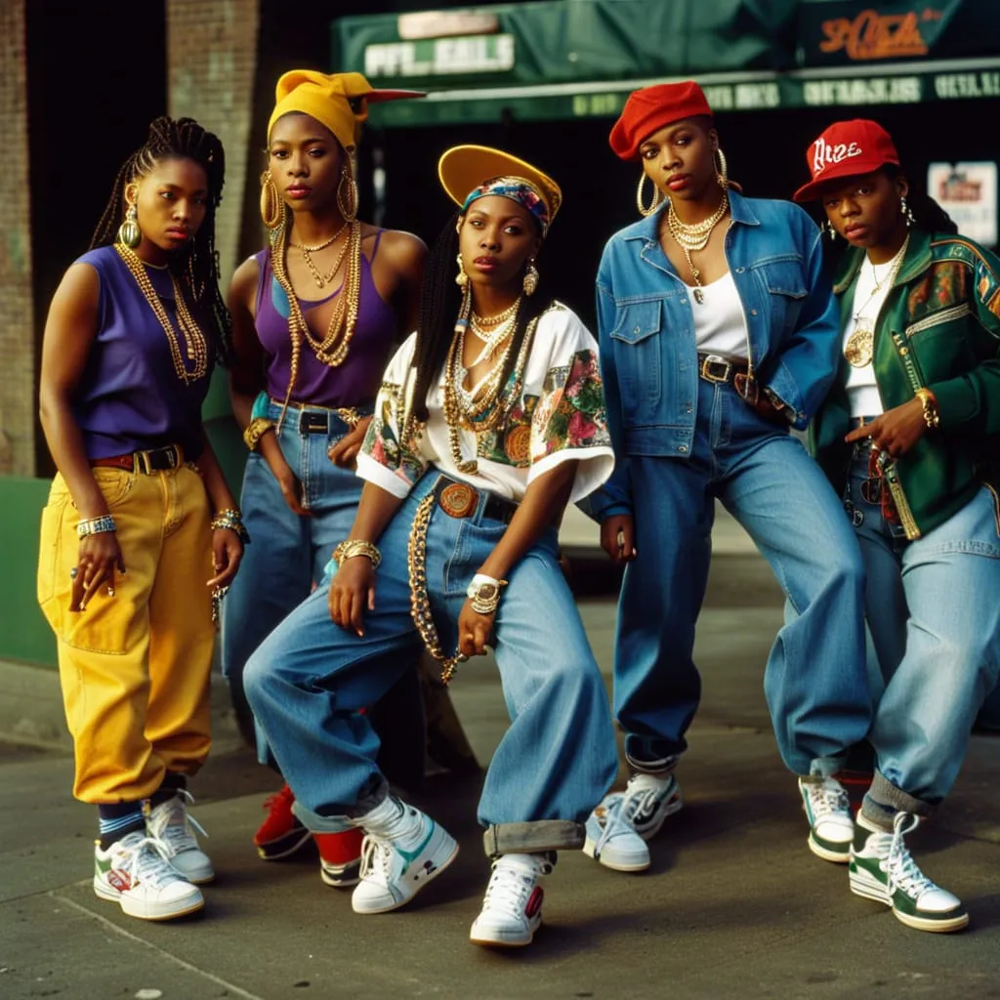

Dança e estilo
Hip hop, K-pop e dança
Como movimentos urbanos, coreografias sincronizadas e figurinos ajudam a construir a identidade do Hippop.

A dança ocupa um espaço importante tanto no hip hop quanto no K-pop. Quando essas referências se encontram, surgem coreografias que combinam movimentos urbanos, atitude e sincronização.
A força da dança
No hip hop, diferentes estilos de dança valorizam a expressão corporal, a criatividade e a personalidade de cada dançarino. Os movimentos podem transmitir energia, identidade e emoção.
Já no K-pop, as coreografias costumam ser planejadas para acompanhar a música e destacar a apresentação dos artistas. Movimentos sincronizados ajudam a criar um espetáculo visual.

Moda e identidade visual
Os figurinos também ajudam a contar uma história. Roupas largas, tênis, bonés e acessórios são referências associadas à cultura hip hop e podem aparecer combinados com conceitos visuais característicos do K-pop.
Dessa maneira, música, dança e moda trabalham juntas para criar uma apresentação completa. Essa combinação é uma das características que torna o Hippop visualmente marcante.
Uma nova forma de expressão
O encontro entre hip hop e K-pop mostra como diferentes estilos podem influenciar uns aos outros. O resultado não precisa ser uma cópia de nenhum dos dois gêneros, mas uma oportunidade para experimentar novas ideias.
O Hippop representa justamente essa possibilidade: misturar referências, respeitar diferentes culturas e transformar influências em criatividade.
Gostou do artigo?
Escolha uma reação: